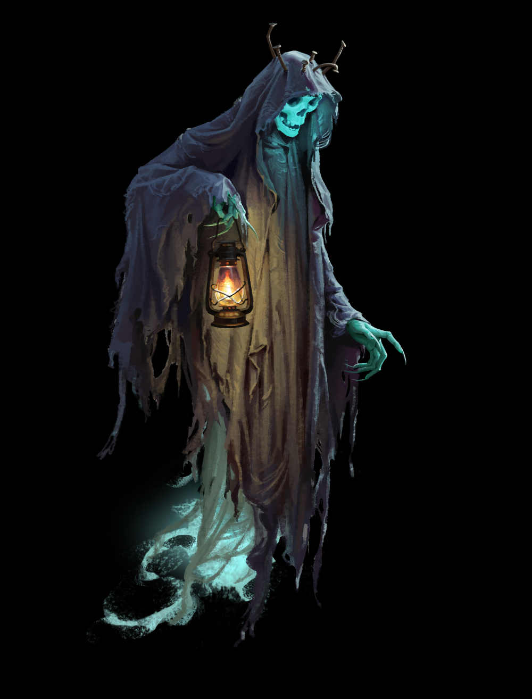
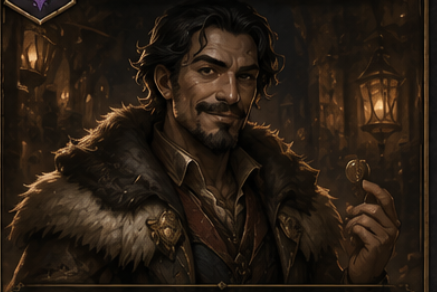
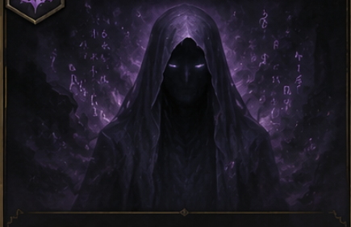
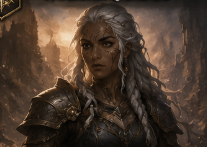
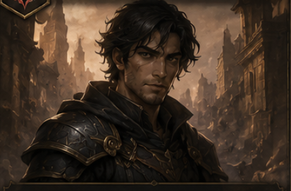
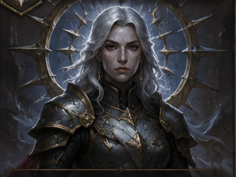
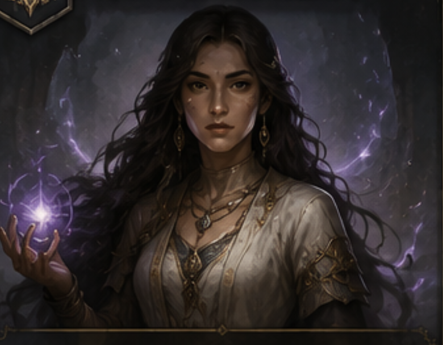

Arthur Morgan
A Lenda do Oeste Perdido

Elarion
O Guia das Almas Perdidas

Brann Kord
O Mercador de Destinos

O Eco
A Voz Entre Dimensões

Nira Solen
A Guardiã Sem Pátria

Darius Vennor
O Caçador de Rupturas

Seraphine Vale
A Juíza de Ferro

Lyara Venn
A Costureira das Fendas